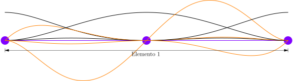
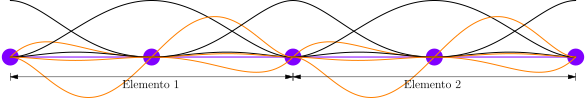

Ejemplo 2
\( L = 5 \ \text{m} \), \( b = 200 \ \text{mm} \), \( h = 300 \ \text{mm} \) y \( E = 200 \ \text{GPa} \)

Un elemento de tres nodos

interpolación de desplazamientos verticales $$ \begin{equation*} \mathbf{N} = \begin{bmatrix} 1 - \frac{23}{25} x^{2} + \frac{66}{125} x^{3} - \frac {68}{625} x^{4} + \frac{24}{3125} x^{5} \\ x - \frac{6}{5} x^{2} + \frac{13}{25} x^{3} - \frac{12}{125} x^{4} + \frac{4}{625} x^{5} \\ \frac{16}{25} x^{2} - \frac{32}{125} x^{3} + \frac{16}{625} x^{4} \\ -\frac{8}{5} x^{2} + \frac{32}{25} x^{3} - \frac{8}{25} x^{4} + \frac{16}{625} x^{5} \\ \frac{7}{25} x^{2} - \frac{34}{125} x^{3} + \frac{52}{625} x^{4} - \frac{24}{3125} x^{5} \\ -\frac{1}{5} x^{2} + \frac{1}{5} x^{3} - \frac{8}{125} x^{4} + \frac{4}{625} x^{5} \end{bmatrix}^{\mathrm{T}} \end{equation*} $$
interpolación de curvatura $$ \begin{equation*} \mathbf{B} = \frac{d^{2} \mathbf{N}}{d x^{2}} = \begin{bmatrix} -\frac{46}{25} + \frac{396}{125} x - \frac{816}{625} x^{2} + \frac{96}{625} x^{3} \\ -\frac{12}{5} + \frac{78}{25} x - \frac{144}{125} x^{2} + \frac{16}{125} x^{3} \\ \frac{32}{25} - \frac{192}{125} x + \frac{192}{625} x^{2} \\ -\frac{16}{5} + \frac{192}{25} x - \frac{96}{25} x^{2} + \frac{64}{125} x^{3} \\ \frac{14}{25} - \frac{204}{125} x + \frac{624}{625} x^{2} - \frac{96}{625} x^{3} \\ -\frac{2}{5} + \frac{6}{5} x - \frac{96}{125} x^{2} + \frac{16}{125} x^{3} \end{bmatrix}^{\mathrm{T}} \end{equation*} $$
matriz constitutiva $$ \begin{equation*} \boldsymbol{D} = E \ I = 9 \times 10^{7} \ [\text{N} \cdot \text{m}^{2}] \end{equation*} $$
reemplazando $$ \begin{equation*} \int_{0}^{5} \begin{bmatrix} -\frac{46}{25} + \frac{396}{125} x - \frac{816}{625} x^{2} + \frac{96}{625} x^{3} \\ -\frac{12}{5} + \frac{78}{25} x - \frac{144}{125} x^{2} + \frac{16}{125} x^{3} \\ \frac{32}{25} - \frac{192}{125} x + \frac{192}{625} x^{2} \\ -\frac{16}{5} + \frac{192}{25} x - \frac{96}{25} x^{2} + \frac{64}{125} x^{3} \\ \frac{14}{25} - \frac{204}{125} x + \frac{624}{625} x^{2} - \frac{96}{625} x^{3} \\ -\frac{2}{5} + \frac{6}{5} x - \frac{96}{125} x^{2} + \frac{16}{125} x^{3} \end{bmatrix} \begin{bmatrix} 9 \times 10^{7} \end{bmatrix} \begin{bmatrix} -\frac{46}{25} + \frac{396}{125} x - \frac{816}{625} x^{2} + \frac{96}{625} x^{3} \\ -\frac{12}{5} + \frac{78}{25} x - \frac{144}{125} x^{2} + \frac{16}{125} x^{3} \\ \frac{32}{25} - \frac{192}{125} x + \frac{192}{625} x^{2} \\ -\frac{16}{5} + \frac{192}{25} x - \frac{96}{25} x^{2} + \frac{64}{125} x^{3} \\ \frac{14}{25} - \frac{204}{125} x + \frac{624}{625} x^{2} - \frac{96}{625} x^{3} \\ -\frac{2}{5} + \frac{6}{5} x - \frac{96}{125} x^{2} + \frac{16}{125} x^{3} \end{bmatrix}^{\mathrm{T}} dx \begin{bmatrix} v_{1} \\ \theta_{1} \\ v_{2} \\ \theta_{2} \\ v_{3} \\ \theta_{3} \end{bmatrix} = \int_{0}^{5} -12000 \begin{bmatrix} 1 - \frac{23}{25} x^{2} + \frac{66}{125} x^{3} - \frac {68}{625} x^{4} + \frac{24}{3125} x^{5} \\ x - \frac{6}{5} x^{2} + \frac{13}{25} x^{3} - \frac{12}{125} x^{4} + \frac{4}{625} x^{5} \\ \frac{16}{25} x^{2} - \frac{32}{125} x^{3} + \frac{16}{625} x^{4} \\ -\frac{8}{5} x^{2} + \frac{32}{25} x^{3} - \frac{8}{25} x^{4} + \frac{16}{625} x^{5} \\ \frac{7}{25} x^{2} - \frac{34}{125} x^{3} + \frac{52}{625} x^{4} - \frac{24}{3125} x^{5} \\ -\frac{1}{5} x^{2} + \frac{1}{5} x^{3} - \frac{8}{125} x^{4} + \frac{4}{625} x^{5} \\ \end{bmatrix} dx + \begin{bmatrix} F_{1} \\ M_{1} \\ F_{2} \\ M_{2} \\ F_{3} \\ M_{3} \end{bmatrix} \end{equation*} $$
integrando $$ \begin{equation*} \begin{bmatrix} 1.05 \times 10^{8} & 1.17 \times 10^{8} & -7.37 \times 10^{7} & 1.97 \times 10^{8} & -3.1 \times 10^{7} & 2.49 \times 10^{7} \\ 1.17 \times 10^{8} & 1.71 \times 10^{8} & -9.22 \times 10^{7} & 1.65 \times 10^{8} & -2.49 \times 10^{7} & 1.95 \times 10^{7} \\ -7.37 \times 10^{7} & -9.22 \times 10^{7} & 1.47 \times 10^{8} & 0 & -7.37 \times 10^{7} & 9.22 \times 10^{7} \\ 1.97 \times 10^{8} & 1.65 \times 10^{8} & 0 & 6.58 \times 10^{8} & -1.97 \times 10^{8} & 1.65 \times 10^{8} \\ -3.1 \times 10^{7} & -2.49 \times 10^{7} & -7.37 \times 10^{7} & -1.97 \times 10^{8} & 1.05 \times 10^{8} & -1.17 \times 10^{8} \\ 2.49 \times 10^{7} & 1.95 \times 10^{7} & 9.22 \times 10^{7} & 1.65 \times 10^{8} & -1.17 \times 10^{8} & 1.71 \times 10^{8} \\ \end{bmatrix} \begin{bmatrix} v_{1} \\ \theta_{1} \\ v_{2} \\ \theta_{2} \\ v_{3} \\ \theta_{3} \end{bmatrix} = \begin{bmatrix} -14000 \\ -5000 \\ -32000 \\ 0 \\ -14000 \\ 5000 \end{bmatrix} + \begin{bmatrix} F_{1} \\ M_{1} \\ F_{2} \\ M_{2} \\ F_{3} \\ M_{3} \end{bmatrix} \end{equation*} $$
reemplazando las condiciones de contorno $$ \begin{equation*} \begin{bmatrix} 1.05 \times 10^{8} & 1.17 \times 10^{8} & -7.37 \times 10^{7} & 1.97 \times 10^{8} & -3.1 \times 10^{7} & 2.49 \times 10^{7} \\ 1.17 \times 10^{8} & 1.71 \times 10^{8} & -9.22 \times 10^{7} & 1.65 \times 10^{8} & -2.49 \times 10^{7} & 1.95 \times 10^{7} \\ -7.37 \times 10^{7} & -9.22 \times 10^{7} & 1.47 \times 10^{8} & 0 & -7.37 \times 10^{7} & 9.22 \times 10^{7} \\ 1.97 \times 10^{8} & 1.65 \times 10^{8} & 0 & 6.58 \times 10^{8} & -1.97 \times 10^{8} & 1.65 \times 10^{8} \\ -3.1 \times 10^{7} & -2.49 \times 10^{7} & -7.37 \times 10^{7} & -1.97 \times 10^{8} & 1.05 \times 10^{8} & -1.17 \times 10^{8} \\ 2.49 \times 10^{7} & 1.95 \times 10^{7} & 9.22 \times 10^{7} & 1.65 \times 10^{8} & -1.17 \times 10^{8} & 1.71 \times 10^{8} \\ \end{bmatrix} \begin{bmatrix} 0 \\ 0 \\ v_{2} \\ \theta_{2} \\ v_{3} \\ \theta_{3} \end{bmatrix} = \begin{bmatrix} -14000 \\ -5000 \\ -32000 \\ 0 \\ -14000 \\ 5000 \end{bmatrix} + \begin{bmatrix} F_{1} \\ M_{1} \\ 0 \\ 0 \\ 0 \\ 0 \end{bmatrix} \end{equation*} $$
sumando $$ \begin{equation*} \begin{bmatrix} 1.05 \times 10^{8} & 1.17 \times 10^{8} & -7.37 \times 10^{7} & 1.97 \times 10^{8} & -3.1 \times 10^{7} & 2.49 \times 10^{7} \\ 1.17 \times 10^{8} & 1.71 \times 10^{8} & -9.22 \times 10^{7} & 1.65 \times 10^{8} & -2.49 \times 10^{7} & 1.95 \times 10^{7} \\ -7.37 \times 10^{7} & -9.22 \times 10^{7} & 1.47 \times 10^{8} & 0 & -7.37 \times 10^{7} & 9.22 \times 10^{7} \\ 1.97 \times 10^{8} & 1.65 \times 10^{8} & 0 & 6.58 \times 10^{8} & -1.97 \times 10^{8} & 1.65 \times 10^{8} \\ -3.1 \times 10^{7} & -2.49 \times 10^{7} & -7.37 \times 10^{7} & -1.97 \times 10^{8} & 1.05 \times 10^{8} & -1.17 \times 10^{8} \\ 2.49 \times 10^{7} & 1.95 \times 10^{7} & 9.22 \times 10^{7} & 1.65 \times 10^{8} & -1.17 \times 10^{8} & 1.71 \times 10^{8} \\ \end{bmatrix} \begin{bmatrix} 0 \\ 0 \\ v_{2} \\ \theta_{2} \\ v_{3} \\ \theta_{3} \end{bmatrix} = \begin{bmatrix} F_{1} - 14000 \\ M_{1} - 5000 \\ -32000 \\ 0 \\ -14000 \\ 5000 \end{bmatrix} \end{equation*} $$
resolviendo $$ \begin{align*} F_{1} &= 60000 \ [\text{N}] \\ M_{1} &= 150000 \ [\text{N} \cdot \text{m}] \\ v_{2} &= -3.69 \times 10^{-3} \ [\text{m}] \\ \theta_{2} &= -2.43 \times 10^{-3} \ [\text{rad}] \\ v_{3} &= -1.04 \times 10^{-2} \ [\text{m}] \\ \theta_{3} &= -2.78 \times 10^{-3} \ [\text{rad}] \end{align*} $$
Desplazamientos, deformaciones, esfuerzos, etc.
desplazamientos verticales $$ \begin{align*} v &= \mathbf{N} \ \mathbf{v} \\ &= \begin{bmatrix} 1 - \frac{23}{25} x^{2} + \frac{66}{125} x^{3} - \frac {68}{625} x^{4} + \frac{24}{3125} x^{5} \\ x - \frac{6}{5} x^{2} + \frac{13}{25} x^{3} - \frac{12}{125} x^{4} + \frac{4}{625} x^{5} \\ \frac{16}{25} x^{2} - \frac{32}{125} x^{3} + \frac{16}{625} x^{4} \\ -\frac{8}{5} x^{2} + \frac{32}{25} x^{3} - \frac{8}{25} x^{4} + \frac{16}{625} x^{5} \\ \frac{7}{25} x^{2} - \frac{34}{125} x^{3} + \frac{52}{625} x^{4} - \frac{24}{3125} x^{5} \\ -\frac{1}{5} x^{2} + \frac{1}{5} x^{3} - \frac{8}{125} x^{4} + \frac{4}{625} x^{5} \end{bmatrix}^{\mathrm{T}} \begin{bmatrix} 0 \\ 0 \\ -3.69 \times 10^{-3} \\ -2.43 \times 10^{-3} \\ -1.04 \times 10^{-2} \\ -2.78 \times 10^{-3} \end{bmatrix} \\ &= -\frac{1}{1200} x^{2} + \frac{1}{9000} x^{3} - \frac{1}{18000} x^{4} \ [\text{m}] \end{align*} $$
desplazamientos horizontales $$ \begin{align*} u &= y \frac{d v}{d x} \\ &= 0.15 \bigg[ -\frac{1}{600} x + \frac{1}{3000} x^{2} - \frac{1}{45000} x^{3} \bigg] \\ &= -\frac{1}{4000} x + \frac{1}{20000} x^{2} - \frac{1}{300000} x^{3} \ [\text{m}] \end{align*} $$
deformación normal $$ \begin{equation*} \varepsilon_{x} = \frac{d u}{d x} = -\frac{1}{4000} + \frac{1}{10000} x - \frac{1}{100000} x^{2} \end{equation*} $$
momentos flectores $$ \begin{equation*} M = E I \frac{d^{2} v}{d x^{2}} = -150000 + 60000 x - 6000 x^{2} \ [\text{N} \cdot \text{m}] \end{equation*} $$
cortante $$ \begin{equation*} V = \frac{d M}{d x} = 60000 - 12000 x \ [\text{N}] \end{equation*} $$
esfuerzo normal $$ \begin{equation*} \sigma_{x} = E \ \varepsilon_{x} = -50 + 20 x - 2 x^{2} \ [\text{MPa}] \end{equation*} $$
esfuerzo cortante $$ \begin{equation*} \tau_{yz} = \frac{V Q}{I \ b} = \frac{3}{2} - \frac{3}{10} x \ [\text{MPa}] \end{equation*} $$
Dos elementos de tres nodos

Elemento 1
interpolación de desplazamientos verticales $$ \begin{equation*} \mathbf{N} = \begin{bmatrix} 1 - \frac{92}{25} x^{2} + \frac {528}{125} x^{3} - \frac{1088}{625} x^{4} + \frac{768}{3125} x^{5} \\ x - \frac {12}{5} x^{2} + \frac {52}{25} x^{3} - \frac{96}{125} x^{4} + \frac{64}{625} x^{5} \\ \frac{64}{25} x^{2} - \frac{256}{125} x^{3} + \frac{256}{625} x^{4} \\ -\frac{16}{5} x^{2} + \frac{128}{25} x^{3} - \frac{64}{25} x^{4} + \frac{256}{625} x^{5} \\ \frac{28}{25} x^{2} - \frac{272}{125} x^{3} + \frac{832}{625} x^{4} - \frac{768}{3125} x^{5} \\ -\frac{2}{5} x^{2} + \frac{4}{5} x^{3} - \frac{64}{125} x^{4} + \frac{64}{625} x^{5} \end{bmatrix}^{\mathrm{T}} \end{equation*} $$
interpolación de curvatura $$ \begin{equation*} \mathbf{B} = \frac{d^{2} \mathbf{N}}{d x^{2}} = \begin{bmatrix} -\frac{184}{25} + \frac{3168}{125} x - \frac {13056}{625} x^{2} + \frac{3072}{625} x^{3} \\ -\frac{24}{5} + \frac{312}{25} x - \frac{1152}{125} x^{2} + \frac{256}{125} x^{3} \\ \frac{128}{25} - \frac{1536}{125} x + \frac{3072}{625} x^{2} \\ -\frac{32}{5} + \frac{768}{25} x - \frac{768}{25} x^{2} + \frac{1024}{125} x^{3} \\ \frac{56}{25} - \frac{1632}{125} x + \frac{9984}{625} x^{2} - \frac{3072}{625} x^{3} \\ -\frac{4}{5} + \frac{24}{5} x - \frac{768}{125} x^{2} + \frac{256}{125} x^{3} \end{bmatrix}^{\mathrm{T}} \end{equation*} $$
matriz constitutiva $$ \begin{equation*} \mathbf{D} = E \ I = 9 \times 10^{7} \ [\text{N} \cdot \text{m}^{2}] \end{equation*} $$
reemplazando $$ \begin{equation*} \int_{0}^{2.5} \begin{bmatrix} -\frac{184}{25} + \frac{3168}{125} x - \frac {13056}{625} x^{2} + \frac{3072}{625} x^{3} \\ -\frac{24}{5} + \frac{312}{25} x - \frac{1152}{125} x^{2} + \frac{256}{125} x^{3} \\ \frac{128}{25} - \frac{1536}{125} x + \frac{3072}{625} x^{2} \\ -\frac{32}{5} + \frac{768}{25} x - \frac{768}{25} x^{2} + \frac{1024}{125} x^{3} \\ \frac{56}{25} - \frac{1632}{125} x + \frac{9984}{625} x^{2} - \frac{3072}{625} x^{3} \\ -\frac{4}{5} + \frac{24}{5} x - \frac{768}{125} x^{2} + \frac{256}{125} x^{3} \end{bmatrix} \begin{bmatrix} 9 \times 10^{7} \end{bmatrix} \begin{bmatrix} -\frac{184}{25} + \frac{3168}{125} x - \frac {13056}{625} x^{2} + \frac{3072}{625} x^{3} \\ -\frac{24}{5} + \frac{312}{25} x - \frac{1152}{125} x^{2} + \frac{256}{125} x^{3} \\ \frac{128}{25} - \frac{1536}{125} x + \frac{3072}{625} x^{2} \\ -\frac{32}{5} + \frac{768}{25} x - \frac{768}{25} x^{2} + \frac{1024}{125} x^{3} \\ \frac{56}{25} - \frac{1632}{125} x + \frac{9984}{625} x^{2} - \frac{3072}{625} x^{3} \\ -\frac{4}{5} + \frac{24}{5} x - \frac{768}{125} x^{2} + \frac{256}{125} x^{3} \end{bmatrix}^{\mathrm{T}} dx \begin{bmatrix} v_{1} \\ \theta_{1} \\ v_{2} \\ \theta_{2} \\ v_{3} \\ \theta_{3} \end{bmatrix} = \int_{0}^{2.5} -12000 \begin{bmatrix} 1 - \frac{92}{25} x^{2} + \frac {528}{125} x^{3} - \frac{1088}{625} x^{4} + \frac{768}{3125} x^{5} \\ x - \frac {12}{5} x^{2} + \frac {52}{25} x^{3} - \frac{96}{125} x^{4} + \frac{64}{625} x^{5} \\ \frac{64}{25} x^{2} - \frac{256}{125} x^{3} + \frac{256}{625} x^{4} \\ -\frac{16}{5} x^{2} + \frac{128}{25} x^{3} - \frac{64}{25} x^{4} + \frac{256}{625} x^{5} \\ \frac{28}{25} x^{2} - \frac{272}{125} x^{3} + \frac{832}{625} x^{4} - \frac{768}{3125} x^{5} \\ -\frac{2}{5} x^{2} + \frac{4}{5} x^{3} - \frac{64}{125} x^{4} + \frac{64}{625} x^{5} \end{bmatrix} dx + \begin{bmatrix} F_{1} \\ M_{1} \\ F_{2} \\ M_{2} \\ F_{3} \\ M_{3} \end{bmatrix} \end{equation*} $$
integrando $$ \begin{equation*} \begin{bmatrix} 8.38 \times 10^{8} & 4.68 \times 10^{8} & -5.9 \times 10^{8} & 7.9 \times 10^{8} & -2.48 \times 10^{8} & 9.96 \times 10^{7} \\ 4.68 \times 10^{8} & 3.41 \times 10^{8} & -3.69 \times 10^{8} & 3.29 \times 10^{8} & -9.96 \times 10^{7} & 3.91 \times 10^{7} \\ -5.9 \times 10^{8} & -3.69 \times 10^{8} & 1.18 \times 10^{9} & 0 & -5.9 \times 10^{8} & 3.69 \times 10^{8} \\ 7.9 \times 10^{8} & 3.29 \times 10^{8} & 0 & 1.32 \times 10^{9} & -7.9 \times 10^{8} & 3.29 \times 10^{8} \\ -2.48 \times 10^{8} & -9.96 \times 10^{7} & -5.9 \times 10^{8} & -7.9 \times 10^{8} & 8.38 \times 10^{8} & -4.68 \times 10^{8} \\ 9.96 \times 10^{7} & 3.91 \times 10^{7} & 3.69 \times 10^{8} & 3.29 \times 10^{8} & -4.68 \times 10^{8} & 3.41 \times 10^{8} \\ \end{bmatrix} \begin{bmatrix} v_{1} \\ \theta_{1} \\ v_{2} \\ \theta_{2} \\ v_{3} \\ \theta_{3} \end{bmatrix} = \begin{bmatrix} -7000 \\ -1250 \\ -16000 \\ 0 \\ -7000 \\ 1250 \end{bmatrix} + \begin{bmatrix} F_{1} \\ M_{1} \\ F_{2} \\ M_{2} \\ F_{3} \\ M_{3} \end{bmatrix} \end{equation*} $$
Elemento 2
interpolación de desplazamientos verticales $$ \begin{equation*} \mathbf{N} = \begin{bmatrix} -180 - \frac{3476}{25} x^{2} + \frac{1272}{5} x + \frac{4624}{125} x^{3} - \frac{3008}{625} x^{4} + \frac{768}{3125} x^{5} \\ -90 + 120 x - \frac{314}{5} x^{2} + \frac{404}{25} x^{3} - \frac{256}{125} x^{4} + \frac{64}{625} x^{5} \\ 64 - \frac{384}{5} x + \frac{832}{25} x^{2} - \frac{768}{125} x^{3} + \frac{256}{625} x^{4} \\ -240 + 352 x - \frac{1008}{5} x^{2} + \frac{1408}{25} x^{3} - \frac{192}{25} x^{4} + \frac{256}{625} x^{5} \\ 117 - \frac{888}{5} x + \frac{2644}{25} x^{2} - \frac{3856}{125} x^{3} + \frac{2752}{625} x^{4} - \frac{768}{3125} x^{5} \\ -45 + 69 x - \frac{208}{5} x^{2} + \frac{308}{25} x^{3} - \frac{224}{125} x^{4} + \frac{64}{625} x^{5} \end{bmatrix}^{\mathrm{T}} \end{equation*} $$
interpolación de curvatura $$ \begin{equation*} \mathbf{B} = \frac{d^{2} \mathbf{N}}{d x^{2}} = \begin{bmatrix} -\frac{6952}{25} + \frac{27744}{125} x - \frac{36096}{625} x^{2} + \frac{3072}{625} x^{3} \\ -\frac{628}{5} + \frac{2424}{25} x - \frac{3072}{125} x^{2} + \frac{256}{125} x^{3} \\ \frac{1664}{25}- \frac{4608}{125} x + \frac{3072}{625} x^{2} \\ -\frac{2016}{5} + \frac{8448}{25} x - \frac{2304}{25} x^{2} + \frac{1024}{125} x^{3} \\ \frac{5288}{25} - \frac{23136}{125} x + \frac{33024}{625} x^{2} - \frac{3072}{625} x^{3} \\ -\frac{416}{5} + \frac{1848}{25} x - \frac{2688}{125} x^{2} + \frac{256}{125} x^{3} \end{bmatrix}^{\mathrm{T}} \end{equation*} $$
matriz constitutiva $$ \begin{equation*} \mathbf{D} = E \ I = 9 \times 10^{7} \ [\text{N} \cdot \text{m}^{2}] \end{equation*} $$
reemplazando $$ \begin{equation*} \int_{2.5}^{5} \begin{bmatrix} -\frac{6952}{25} + \frac{27744}{125} x - \frac{36096}{625} x^{2} + \frac{3072}{625} x^{3} \\ -\frac{628}{5} + \frac{2424}{25} x - \frac{3072}{125} x^{2} + \frac{256}{125} x^{3} \\ \frac{1664}{25}- \frac{4608}{125} x + \frac{3072}{625} x^{2} \\ -\frac{2016}{5} + \frac{8448}{25} x - \frac{2304}{25} x^{2} + \frac{1024}{125} x^{3} \\ \frac{5288}{25} - \frac{23136}{125} x + \frac{33024}{625} x^{2} - \frac{3072}{625} x^{3} \\ -\frac{416}{5} + \frac{1848}{25} x - \frac{2688}{125} x^{2} + \frac{256}{125} x^{3} \end{bmatrix} \begin{bmatrix} 9 \times 10^{7} \end{bmatrix} \begin{bmatrix} -\frac{6952}{25} + \frac{27744}{125} x - \frac{36096}{625} x^{2} + \frac{3072}{625} x^{3} \\ -\frac{628}{5} + \frac{2424}{25} x - \frac{3072}{125} x^{2} + \frac{256}{125} x^{3} \\ \frac{1664}{25}- \frac{4608}{125} x + \frac{3072}{625} x^{2} \\ -\frac{2016}{5} + \frac{8448}{25} x - \frac{2304}{25} x^{2} + \frac{1024}{125} x^{3} \\ \frac{5288}{25} - \frac{23136}{125} x + \frac{33024}{625} x^{2} - \frac{3072}{625} x^{3} \\ -\frac{416}{5} + \frac{1848}{25} x - \frac{2688}{125} x^{2} + \frac{256}{125} x^{3} \end{bmatrix}^{\mathrm{T}} dx \begin{bmatrix} v_{1} \\ \theta_{1} \\ v_{2} \\ \theta_{2} \\ v_{3} \\ \theta_{3} \end{bmatrix} = \int_{2.5}^{5} -12000 \begin{bmatrix} -180 - \frac{3476}{25} x^{2} + \frac{1272}{5} x + \frac{4624}{125} x^{3} - \frac{3008}{625} x^{4} + \frac{768}{3125} x^{5} \\ -90 + 120 x - \frac{314}{5} x^{2} + \frac{404}{25} x^{3} - \frac{256}{125} x^{4} + \frac{64}{625} x^{5} \\ 64 - \frac{384}{5} x + \frac{832}{25} x^{2} - \frac{768}{125} x^{3} + \frac{256}{625} x^{4} \\ -240 + 352 x - \frac{1008}{5} x^{2} + \frac{1408}{25} x^{3} - \frac{192}{25} x^{4} + \frac{256}{625} x^{5} \\ 117 - \frac{888}{5} x + \frac{2644}{25} x^{2} - \frac{3856}{125} x^{3} + \frac{2752}{625} x^{4} - \frac{768}{3125} x^{5} \\ -45 + 69 x - \frac{208}{5} x^{2} + \frac{308}{25} x^{3} - \frac{224}{125} x^{4} + \frac{64}{625} x^{5} \end{bmatrix} dx + \begin{bmatrix} F_{1} \\ M_{1} \\ F_{2} \\ M_{2} \\ F_{3} \\ M_{3} \end{bmatrix} \end{equation*} $$
integrando $$ \begin{equation*} \begin{bmatrix} 8.38 \times 10^{8} & 4.68 \times 10^{8} & -5.9 \times 10^{8} & 7.9 \times 10^{8} & -2.48 \times 10^{8} & 9.96 \times 10^{7} \\ 4.68 \times 10^{8} & 3.41 \times 10^{8} & -3.69 \times 10^{8} & 3.29 \times 10^{8} & -9.96 \times 10^{7} & 3.91 \times 10^{7} \\ -5.9 \times 10^{8} & -3.69 \times 10^{8} & 1.18 \times 10^{9} & 0 & -5.9 \times 10^{8} & 3.69 \times 10^{8} \\ 7.9 \times 10^{8} & 3.29 \times 10^{8} & 0 & 1.32 \times 10^{9} & -7.9 \times 10^{8} & 3.29 \times 10^{8} \\ -2.48 \times 10^{8} & -9.96 \times 10^{7} & -5.9 \times 10^{8} & -7.9 \times 10^{8} & 8.38 \times 10^{8} & -4.68 \times 10^{8} \\ 9.96 \times 10^{7} & 3.91 \times 10^{7} & 3.69 \times 10^{8} & 3.29 \times 10^{8} & -4.68 \times 10^{8} & 3.41 \times 10^{8} \\ \end{bmatrix} \begin{bmatrix} v_{1} \\ \theta_{1} \\ v_{2} \\ \theta_{2} \\ v_{3} \\ \theta_{3} \end{bmatrix} = \begin{bmatrix} -7000 \\ -1250 \\ -16000 \\ 0 \\ -7000 \\ 1250 \end{bmatrix} + \begin{bmatrix} F_{1} \\ M_{1} \\ F_{2} \\ M_{2} \\ F_{3} \\ M_{3} \end{bmatrix} \end{equation*} $$
Ensamblaje y solución
ensamblando matriz global $$ \begin{equation*} \begin{bmatrix} 8.38 \times 10^{8} & 4.68 \times 10^{8} & -5.9 \times 10^{8} & 7.9 \times 10^{8} & -2.48 \times 10^{8} & 9.96 \times 10^{7} & 0 & 0 & 0 & 0 \\ 4.68 \times 10^{8} & 3.41 \times 10^{8} & -3.69 \times 10^{8} & 3.29 \times 10^{8} & -9.96 \times 10^{7} & 3.91 \times 10^{7} & 0 & 0 & 0 & 0 \\ -5.9 \times 10^{8} & -3.69 \times 10^{8} & 1.18 \times 10^{9} & 0 & -5.9 \times 10^{8} & 3.69 \times 10^{8} & 0 & 0 & 0 & 0 \\ 7.9 \times 10^{8} & 3.29 \times 10^{8} & 0 & 1.32 \times 10^{9} & -7.9 \times 10^{8} & 3.29 \times 10^{8} & 0 & 0 & 0 & 0 \\ -2.48 \times 10^{8} & -9.96 \times 10^{7} & -5.9 \times 10^{8} & -7.9 \times 10^{8} & 8.38 \times 10^{8} + 8.38 \times 10^{8} & -4.68 \times 10^{8} + 4.68 \times 10^{8} & 0 & 0 & 0 & 0 \\ 9.96 \times 10^{7} & 3.91 \times 10^{7} & 3.69 \times 10^{8} & 3.29 \times 10^{8} & -4.68 \times 10^{8} + 4.68 \times 10^{8} & 3.41 \times 10^{8} + 3.41 \times 10^{8} & 0 & 0 & 0 & 0 \\ 0 & 0 & 0 & 0 & -5.9 \times 10^{8} & -3.69 \times 10^{8} & 1.18 \times 10^{9} & 0 & -5.9 \times 10^{8} & 3.69 \times 10^{8} \\ 0 & 0 & 0 & 0 & 7.9 \times 10^{8} & 3.29 \times 10^{8} & 0 & 1.32 \times 10^{9} & -7.9 \times 10^{8} & 3.29 \times 10^{8} \\ 0 & 0 & 0 & 0 & -2.48 \times 10^{8} & -9.96 \times 10^{7} & -5.9 \times 10^{8} & -7.9 \times 10^{8} & 8.38 \times 10^{8} & -4.68 \times 10^{8} \\ 0 & 0 & 0 & 0 & 9.96 \times 10^{7} & 3.91 \times 10^{7} & 3.69 \times 10^{8} & 3.29 \times 10^{8} & -4.68 \times 10^{8} & 3.41 \times 10^{8} \\ \end{bmatrix} \begin{bmatrix} v_{1} \\ \theta_{1} \\ v_{2} \\ \theta_{2} \\ v_{3} + v_{1} \\ \theta_{3} + \theta_{1} \\ v_{2} \\ \theta_{2} \\ v_{3} \\ \theta_{3} \end{bmatrix} = \begin{bmatrix} -7000 \\ -1250 \\ -16000 \\ 0 \\ -7000 - 7000 \\ 1250 - 1250 \\ -16000 \\ 0 \\ -7000 \\ 1250 \end{bmatrix} + \begin{bmatrix} F_{1} \\ M_{1} \\ F_{2} \\ M_{2} \\ F_{3} + F_{1} \\ M_{3} + M_{1} \\ F_{2} \\ M_{2} \\ F_{3} \\ M_{3} \end{bmatrix} \end{equation*} $$
sumando $$ \begin{equation*} \begin{bmatrix} 8.38 \times 10^{8} & 4.68 \times 10^{8} & -5.9 \times 10^{8} & 7.9 \times 10^{8} & -2.48 \times 10^{8} & 9.96 \times 10^{7} & 0 & 0 & 0 & 0 \\ 4.68 \times 10^{8} & 3.41 \times 10^{8} & -3.69 \times 10^{8} & 3.29 \times 10^{8} & -9.96 \times 10^{7} & 3.91 \times 10^{7} & 0 & 0 & 0 & 0 \\ -5.9 \times 10^{8} & -3.69 \times 10^{8} & 1.18 \times 10^{9} & 0 & -5.9 \times 10^{8} & 3.69 \times 10^{8} & 0 & 0 & 0 & 0 \\ 7.9 \times 10^{8} & 3.29 \times 10^{8} & 0 & 1.32 \times 10^{9} & -7.9 \times 10^{8} & 3.29 \times 10^{8} & 0 & 0 & 0 & 0 \\ -2.48 \times 10^{8} & -9.96 \times 10^{7} & -5.9 \times 10^{8} & -7.9 \times 10^{8} & 1.68 \times 10^{9} & 0 & 0 & 0 & 0 & 0 \\ 9.96 \times 10^{7} & 3.91 \times 10^{7} & 3.69 \times 10^{8} & 3.29 \times 10^{8} & 0 & 6.83 \times 10^{8} & 0 & 0 & 0 & 0 \\ 0 & 0 & 0 & 0 & -5.9 \times 10^{8} & -3.69 \times 10^{8} & 1.18 \times 10^{9} & 0 & -5.9 \times 10^{8} & 3.69 \times 10^{8} \\ 0 & 0 & 0 & 0 & 7.9 \times 10^{8} & 3.29 \times 10^{8} & 0 & 1.32 \times 10^{9} & -7.9 \times 10^{8} & 3.29 \times 10^{8} \\ 0 & 0 & 0 & 0 & -2.48 \times 10^{8} & -9.96 \times 10^{7} & -5.9 \times 10^{8} & -7.9 \times 10^{8} & 8.38 \times 10^{8} & -4.68 \times 10^{8} \\ 0 & 0 & 0 & 0 & 9.96 \times 10^{7} & 3.91 \times 10^{7} & 3.69 \times 10^{8} & 3.29 \times 10^{8} & -4.68 \times 10^{8} & 3.41 \times 10^{8} \\ \end{bmatrix} \begin{bmatrix} v_{1} \\ \theta_{1} \\ v_{2} \\ \theta_{2} \\ v_{3} \\ \theta_{3} \\ v_{4} \\ \theta_{4} \\ v_{5} \\ \theta_{5} \end{bmatrix} = \begin{bmatrix} -7000 \\ -1250 \\ -16000 \\ 0 \\ -14000 \\ 0 \\ -16000 \\ 0 \\ -7000 \\ 1250 \end{bmatrix} + \begin{bmatrix} F_{1} \\ M_{1} \\ F_{2} \\ M_{2} \\ F_{3} \\ M_{3} \\ F_{4} \\ M_{4} \\ F_{5} \\ M_{5} \end{bmatrix} \end{equation*} $$
reemplazando las condiciones de contorno $$ \begin{equation*} \begin{bmatrix} 8.38 \times 10^{8} & 4.68 \times 10^{8} & -5.9 \times 10^{8} & 7.9 \times 10^{8} & -2.48 \times 10^{8} & 9.96 \times 10^{7} & 0 & 0 & 0 & 0 \\ 4.68 \times 10^{8} & 3.41 \times 10^{8} & -3.69 \times 10^{8} & 3.29 \times 10^{8} & -9.96 \times 10^{7} & 3.91 \times 10^{7} & 0 & 0 & 0 & 0 \\ -5.9 \times 10^{8} & -3.69 \times 10^{8} & 1.18 \times 10^{9} & 0 & -5.9 \times 10^{8} & 3.69 \times 10^{8} & 0 & 0 & 0 & 0 \\ 7.9 \times 10^{8} & 3.29 \times 10^{8} & 0 & 1.32 \times 10^{9} & -7.9 \times 10^{8} & 3.29 \times 10^{8} & 0 & 0 & 0 & 0 \\ -2.48 \times 10^{8} & -9.96 \times 10^{7} & -5.9 \times 10^{8} & -7.9 \times 10^{8} & 1.68 \times 10^{9} & 0 & 0 & 0 & 0 & 0 \\ 9.96 \times 10^{7} & 3.91 \times 10^{7} & 3.69 \times 10^{8} & 3.29 \times 10^{8} & 0 & 6.83 \times 10^{8} & 0 & 0 & 0 & 0 \\ 0 & 0 & 0 & 0 & -5.9 \times 10^{8} & -3.69 \times 10^{8} & 1.18 \times 10^{9} & 0 & -5.9 \times 10^{8} & 3.69 \times 10^{8} \\ 0 & 0 & 0 & 0 & 7.9 \times 10^{8} & 3.29 \times 10^{8} & 0 & 1.32 \times 10^{9} & -7.9 \times 10^{8} & 3.29 \times 10^{8} \\ 0 & 0 & 0 & 0 & -2.48 \times 10^{8} & -9.96 \times 10^{7} & -5.9 \times 10^{8} & -7.9 \times 10^{8} & 8.38 \times 10^{8} & -4.68 \times 10^{8} \\ 0 & 0 & 0 & 0 & 9.96 \times 10^{7} & 3.91 \times 10^{7} & 3.69 \times 10^{8} & 3.29 \times 10^{8} & -4.68 \times 10^{8} & 3.41 \times 10^{8} \\ \end{bmatrix} \begin{bmatrix} 0 \\ 0 \\ v_{2} \\ \theta_{2} \\ v_{3} \\ \theta_{3} \\ v_{4} \\ \theta_{4} \\ v_{5} \\ \theta_{5} \end{bmatrix} = \begin{bmatrix} -7000 \\ -1250 \\ -16000 \\ 0 \\ -14000 \\ 0 \\ -16000 \\ 0 \\ -7000 \\ 1250 \end{bmatrix} + \begin{bmatrix} F_{1} \\ M_{1} \\ 0 \\ 0 \\ 0 \\ 0 \\ 0 \\ 0 \\ 0 \\ 0 \end{bmatrix} \end{equation*} $$
sumando $$ \begin{equation*} \begin{bmatrix} 8.38 \times 10^{8} & 4.68 \times 10^{8} & -5.9 \times 10^{8} & 7.9 \times 10^{8} & -2.48 \times 10^{8} & 9.96 \times 10^{7} & 0 & 0 & 0 & 0 \\ 4.68 \times 10^{8} & 3.41 \times 10^{8} & -3.69 \times 10^{8} & 3.29 \times 10^{8} & -9.96 \times 10^{7} & 3.91 \times 10^{7} & 0 & 0 & 0 & 0 \\ -5.9 \times 10^{8} & -3.69 \times 10^{8} & 1.18 \times 10^{9} & 0 & -5.9 \times 10^{8} & 3.69 \times 10^{8} & 0 & 0 & 0 & 0 \\ 7.9 \times 10^{8} & 3.29 \times 10^{8} & 0 & 1.32 \times 10^{9} & -7.9 \times 10^{8} & 3.29 \times 10^{8} & 0 & 0 & 0 & 0 \\ -2.48 \times 10^{8} & -9.96 \times 10^{7} & -5.9 \times 10^{8} & -7.9 \times 10^{8} & 1.68 \times 10^{9} & 0 & 0 & 0 & 0 & 0 \\ 9.96 \times 10^{7} & 3.91 \times 10^{7} & 3.69 \times 10^{8} & 3.29 \times 10^{8} & 0 & 6.83 \times 10^{8} & 0 & 0 & 0 & 0 \\ 0 & 0 & 0 & 0 & -5.9 \times 10^{8} & -3.69 \times 10^{8} & 1.18 \times 10^{9} & 0 & -5.9 \times 10^{8} & 3.69 \times 10^{8} \\ 0 & 0 & 0 & 0 & 7.9 \times 10^{8} & 3.29 \times 10^{8} & 0 & 1.32 \times 10^{9} & -7.9 \times 10^{8} & 3.29 \times 10^{8} \\ 0 & 0 & 0 & 0 & -2.48 \times 10^{8} & -9.96 \times 10^{7} & -5.9 \times 10^{8} & -7.9 \times 10^{8} & 8.38 \times 10^{8} & -4.68 \times 10^{8} \\ 0 & 0 & 0 & 0 & 9.96 \times 10^{7} & 3.91 \times 10^{7} & 3.69 \times 10^{8} & 3.29 \times 10^{8} & -4.68 \times 10^{8} & 3.41 \times 10^{8} \\ \end{bmatrix} \begin{bmatrix} 0 \\ 0 \\ v_{2} \\ \theta_{2} \\ v_{3} \\ \theta_{3} \\ v_{4} \\ \theta_{4} \\ v_{5} \\ \theta_{5} \end{bmatrix} = \begin{bmatrix} F_{1} - 7000 \\ M_{1} - 1250 \\ -16000 \\ 0 \\ -14000 \\ 0 \\ -16000 \\ 0 \\ -7000 \\ 1250 \end{bmatrix} \end{equation*} $$
resolviendo $$ \begin{align*} F_{1} &= 60000 \ [\text{N}] \\ M_{1} &= 150000 \ [\text{N} \cdot \text{m}] \\ v_{2} &= -1.1 \times 10^{-3} \ [\text{m}] \\ \theta_{2} &= -1.61 \times 10^{-3} \ [\text{rad}] \\ v_{3} &= -3.69 \times 10^{-3} \ [\text{m}] \\ \theta_{3} &= -2.43 \times 10^{-3} \ [\text{rad}] \\ v_{4} &= -6.96 \times 10^{-3} \ [\text{m}] \\ \theta_{4} &= -2.73 \times 10^{-3} \ [\text{rad}] \\ v_{5} &= -1.04 \times 10^{-2} \ [\text{m}] \\ \theta_{5} &= -2.78 \times 10^{-3} \ [\text{rad}] \end{align*} $$
Desplazamientos, deformaciones, esfuerzos, etc.
Elemento 1
desplazamientos verticales $$ \begin{align*} v &= \mathbf{N} \ \mathbf{v} \\ &= \begin{bmatrix} 1 - \frac{92}{25} x^{2} + \frac {528}{125} x^{3} - \frac{1088}{625} x^{4} + \frac{768}{3125} x^{5} \\ x - \frac {12}{5} x^{2} + \frac {52}{25} x^{3} - \frac{96}{125} x^{4} + \frac{64}{625} x^{5} \\ \frac{64}{25} x^{2} - \frac{256}{125} x^{3} + \frac{256}{625} x^{4} \\ -\frac{16}{5} x^{2} + \frac{128}{25} x^{3} - \frac{64}{25} x^{4} + \frac{256}{625} x^{5} \\ \frac{28}{25} x^{2} - \frac{272}{125} x^{3} + \frac{832}{625} x^{4} - \frac{768}{3125} x^{5} \\ -\frac{2}{5} x^{2} + \frac{4}{5} x^{3} - \frac{64}{125} x^{4} + \frac{64}{625} x^{5} \end{bmatrix}^{\mathrm{T}} \begin{bmatrix} 0 \\ 0 \\ -1.1 \times 10^{-3} \\ -1.61 \times 10^{-3} \\ -3.69 \times 10^{-3} \\ -2.43 \times 10^{-3} \end{bmatrix} \\ &= -\frac{1}{1200} x^{2} + \frac{1}{9000} x^{3} - \frac{1}{18000} x^{4} \ [\text{m}] \end{align*} $$
desplazamientos horizontales $$ \begin{align*} u &= y \frac{d v}{d x} \\ &= 0.15 \bigg[ -\frac{1}{600} x + \frac{1}{3000} x^{2} - \frac{1}{45000} x^{3} \bigg] \\ &= -\frac{1}{4000} x + \frac{1}{20000} x^{2} - \frac{1}{300000} x^{3} \ [\text{m}] \end{align*} $$
deformación normal $$ \begin{equation*} \varepsilon_{x} = \frac{d u}{d x} = -\frac{1}{4000} + \frac{1}{10000} x - \frac{1}{100000} x^{2} \end{equation*} $$
momentos flectores $$ \begin{equation*} M = E I \frac{d^{2} v}{d x^{2}} = -150000 + 60000 x - 6000 x^{2} \ [\text{N} \cdot \text{m}] \end{equation*} $$
cortante $$ \begin{equation*} V = \frac{d M}{d x} = 60000 - 12000 x \ [\text{N}] \end{equation*} $$
esfuerzo normal $$ \begin{equation*} \sigma_{x} = E \ \varepsilon_{x} = -50 + 20 x - 2 x^{2} \ [\text{MPa}] \end{equation*} $$
esfuerzo cortante $$ \begin{equation*} \tau_{yz} = \frac{V Q}{I \ b} = \frac{3}{2} - \frac{3}{10} x \ [\text{MPa}] \end{equation*} $$
Elemento 2
desplazamientos verticales $$ \begin{align*} v &= \mathbf{N} \ \mathbf{v} \\ &= \begin{bmatrix} -180 - \frac{3476}{25} x^{2} + \frac{1272}{5} x + \frac{4624}{125} x^{3} - \frac{3008}{625} x^{4} + \frac{768}{3125} x^{5} \\ -90 + 120 x - \frac{314}{5} x^{2} + \frac{404}{25} x^{3} - \frac{256}{125} x^{4} + \frac{64}{625} x^{5} \\ 64 - \frac{384}{5} x + \frac{832}{25} x^{2} - \frac{768}{125} x^{3} + \frac{256}{625} x^{4} \\ -240 + 352 x - \frac{1008}{5} x^{2} + \frac{1408}{25} x^{3} - \frac{192}{25} x^{4} + \frac{256}{625} x^{5} \\ 117 - \frac{888}{5} x + \frac{2644}{25} x^{2} - \frac{3856}{125} x^{3} + \frac{2752}{625} x^{4} - \frac{768}{3125} x^{5} \\ -45 + 69 x - \frac{208}{5} x^{2} + \frac{308}{25} x^{3} - \frac{224}{125} x^{4} + \frac{64}{625} x^{5} \end{bmatrix}^{\mathrm{T}} \begin{bmatrix} -3.69 \times 10^{-3} \\ -2.43 \times 10^{-3} \\ -6.96 \times 10^{-3} \\ -2.73 \times 10^{-3} \\ -1.04 \times 10^{-2} \\ -2.78 \times 10^{-3} \end{bmatrix} \\ &= -\frac{1}{1200} x^{2} + \frac{1}{9000} x^{3} - \frac{1}{18000} x^{4} \ [\text{m}] \end{align*} $$
desplazamientos horizontales $$ \begin{align*} u &= y \frac{d v}{d x} \\ &= 0.15 \bigg[ -\frac{1}{600} x + \frac{1}{3000} x^{2} - \frac{1}{45000} x^{3} \bigg] \\ &= -\frac{1}{4000} x + \frac{1}{20000} x^{2} - \frac{1}{300000} x^{3} \ [\text{m}] \end{align*} $$
deformación normal $$ \begin{equation*} \varepsilon_{x} = \frac{d u}{d x} = -\frac{1}{4000} + \frac{1}{10000} x - \frac{1}{100000} x^{2} \end{equation*} $$
momentos flectores $$ \begin{equation*} M = E I \frac{d^{2} v}{d x^{2}} = -150000 + 60000 x - 6000 x^{2} \ [\text{N} \cdot \text{m}] \end{equation*} $$
cortante $$ \begin{equation*} V = \frac{d M}{d x} = 60000 - 12000 x \ [\text{N}] \end{equation*} $$
esfuerzo normal $$ \begin{equation*} \sigma_{x} = E \ \varepsilon_{x} = -50 + 20 x - 2 x^{2} \ [\text{MPa}] \end{equation*} $$
esfuerzo cortante $$ \begin{equation*} \tau_{yz} = \frac{V Q}{I \ b} = \frac{3}{2} - \frac{3}{10} x \ [\text{MPa}] \end{equation*} $$